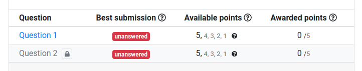
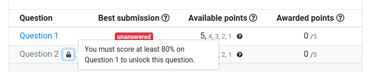
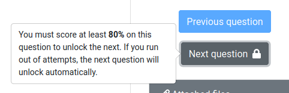

Thanks to the work of David Mitchell (Illinois CS), assessments can now be configured to force students to complete questions strictly in the order that they appear. For instructors who want to configure worksheets, labs, etc. where each question builds off of previous knowledge, this feature is for you.
Adding the key advanceScorePerc with a value between 0 and 100 at any level of your
infoAssessment.json config will cause all questions under that category to be locked
until they have a submission that's correct to at least that percentage before allowing students
to access later questions. If a student runs out of attempts on a question, the next question will
unlock automatically. All the details are described in the
PrairieLearn documentation.
As an example, this infoAssessment.json file will require that students get at least
80% on each question (or run out of attempts) before they can proceed to the next question:
...
"zones": [
{
"advanceScorePerc": 80,
"questions": [
{"id": "demo/demoNewton-page1", "points": [3,2,1]},
{"id": "demo/demoNewton-page2", "points": [3,2,1]}
]
}
]
...
On the Assessment Overview page, students will initially see the above assessment with only Question 1 available. Question 2 will be locked:

To help students understand how these features work, informational tooltips are shown:

